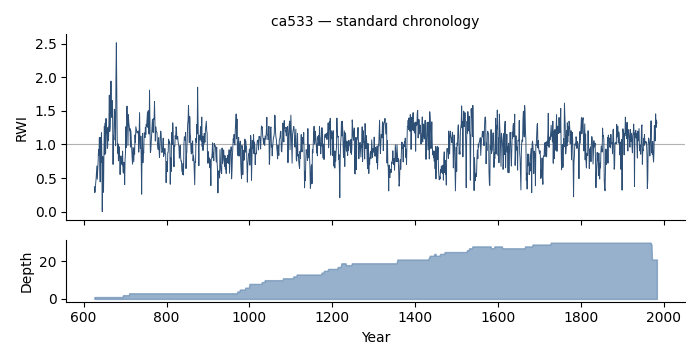

dplPy¶
dplPy is the Dendrochronology Program Library for Python — an open-source toolkit for loading, standardizing, crossdating, and analyzing tree-ring width data. It is part of the OpenDendro project and is a Python companion to the R library dplR, reproducing its methods (and adding COFECHA-style crossdating) so that dendrochronologists can work in either ecosystem.
import dplpy as dpl
rwl = dpl.readers("ca533.rwl") # load ring widths
rwi = dpl.detrend(rwl) # remove the growth trend -> indices
crn = dpl.chron(rwi) # average into a site chronology

Highlights¶
- Familiar to dplR users. Function names and behavior track dplR closely; see Coming from dplR for a side-by-side map.
- Standardization with splines, negative-exponential/Hugershoff curves,
regional curve standardization (
rcs), signal-free (ssf), age-dependent splines (ads), and power transformation (powt). - Chronologies with autoregressive (
chron_ars) and variance-stabilized (chron_stabilized) options. - Crossdating with a dplR-faithful
xdate, a COFECHA emulation mode (xdate(preset="COFECHA")), a COFECHA-style batch report (xdate_report), and floating-series dating (xdate_floater). - Interchange with ITRDB Tucson
.rwl/.crnfiles and LiPD.
Where to go next¶
- Installation — install dplPy and its optional extras.
- Quickstart — a complete read → detrend → chronology → crossdate walkthrough.
- User Guide — task-focused guides for each stage of a dendro workflow.
- API Reference — every public function, generated from the source docstrings.
Citing dplPy¶
dplPy is developed by the OpenDendro group (Andy Bunn, Kevin Anchukaitis, Tyson Swetnam, and contributors). If you use it in published work, please cite the OpenDendro project and the underlying methods referenced in each function's documentation. See the project repository for the current recommended citation.